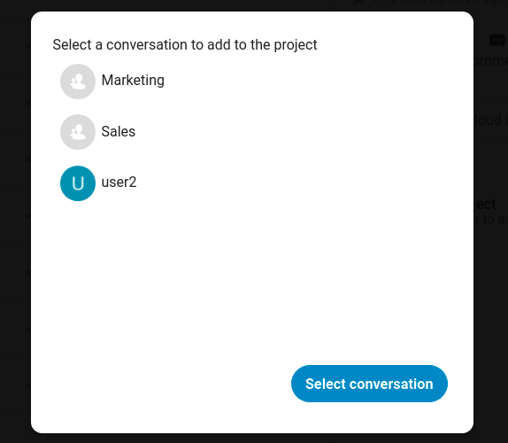

Prosjekter
Deprecated since version 25: This feature was replaced by the shipped related resources app.
Brukarar kan assosiere filer, chatter og andre gjenstander med kvarandre i prosjekter. Dei forskjellige appene vil presentere desse gjenstandene i ei liste, som tillater brukarar å umiddelbart hoppe til dei. Prosjekter er Nextcloud vide. Når ein brukar deler ei fil som er ein del av eit prosjekt, kan dele mottakaren sjå prosjektet også. Eit trykk på ein av gjenstandene i eit prosjekt leier rett til det, om det er ein chat, ei fil eller ei oppgåve
Skap eit nytt prosjekt
Eit nytt prosjekt kan skapas ved å koble to gjenstander saman. Begynn med å opne ei fil eller mappe deling sidemenyen.

Trykk Legg til i eit prosjekt og velg kva gjenstand du vil kople til den noverande filen/mappen. Ein velger vil opne som tillater deg å velge ein Snakke samtale for eksempel.

Når gjenstanden har blitt valgt blir eit nytt prosjekt skapt og oppført i delingsfanen av sidemenyen. Det samme prosjektet vil også dukke opp i dele sidemenyen til de tilknytte gjenstandene.

Listeoppføringen viser raske linker til eit avgrenset nummer av gjenstander. Ved å opne kontekst menyen, kan prosjektet blir omdøypt og den fulle listen av gjenstander bli utvidet.
Legge til fleire oppføringer i eit prosjekt
Om ein annan gjenstand bør bli lagt til i eit allerede eksisterende prosjekt så kan dette gjerast ved å søke etter prosjekt namnet i Legg til prosjekt plukkeren.

Synlighet av prosjekt
Prosjekter påverkar ikkje tilgongen og synlegheita til dei forskjellige gjenstandane. Brukarar vil berre sjå prosjekt av andre brukarar om dei har tilgong til alle inneholdte gjenstander.